Категорія
- Електроніка
- Спорттовари
- Музичні інструменти
Електроніка
- Смартфони
- Ноутбуки
- Акустичні системи
Спорттовари
- Велосипеди
- Тренажери
- Все для йоги
Музичні інструменти
- Гітари
- Ударні
- Духові
смартфони
Iphone XR
Перевірений надійний та бажаний смартфон від компанії Apple, з потужною камерою та 64gb вбудованої пам'яті
Ціна: 15 000 грн
Google Pixel 3
Гарний, швидкий телефон з доступною ціною для повсякденний потрею, вирізняючийся своєю потужною камерою та чистою оболонкою від Google
Ціна: 6 000 грн
Samsung S21
Сучасний тонкий безшовний корпус, який привертає увагу з першого погляду. Супер плавний дисплей 6,4 дюйма забезпечує приголомшливий візуальний досвід, а унікальний високоякісний корпус ідеально та надійно тримається в руці. Надзвичайно чітке зображення під будь-яким кутом. ПОТУЖНЕ 30-КРАТНЕ МАСШТАБУВАННЯ Максимальне наближення до найвіддаленіших об'єктів зйомки
Ціна: 25 000 грн
Ноутбуки
Macbook Air 13 2020
Екран 13.3" Retina (2560x1600) WQXGA, глянсовий / Apple M1 / RAM 8 ГБ / SSD 256 ГБ / Apple M1 Graphics / Wi-Fi / Bluetooth / macOS Big Sur / 1.29 кг / сріблястий
Ціна: 40 000 грн
Asus Rock Strix
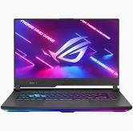Розмір екрану 15,6" / Тип процесора AMD Ryzen 7 4800H / Розмір оперативної пам'яті 16 Гб / Об'єм накопичувача 512 Гб / Відеопроцесор NVIDIA GeForce RTX 3060
Ціна: 50000 грн
Chromebook
Новий ноутбук ASUS, модель Chromebook CX22NA (CX22NA-211.BB01) оснащений усім необхідним для швидкої та комфортної роботи. На борту встановлено операційну систему Chrome OS. Швидкодія забезпечує 2-ядерний процесор Intel Celeron N3350 з частотою роботи 1,1-2,4 ГГц та 4 ГБ оперативної пам'яті. Для зберігання даних встановлений накопичувач 32 ГБ SSD, є кардрідер. Відео на 11,6" екран з роздільною здатністю 1366x768 пікселів виводить графічний адаптер Intel HD Graphics 500. На корпусі ноутбука є роз'єми 3,5 мм аудіо / 2хUSB 3.1 Gen 1 (Type-C). З бездротових комунікацій в наявності Wi-Fi 8021 /g/n/ac та Bluetooth: Тривалий час автономної роботи забезпечує 2 осередковий акумулятор.
Ціна: 8 000 грн
Акустичні системи
Genius
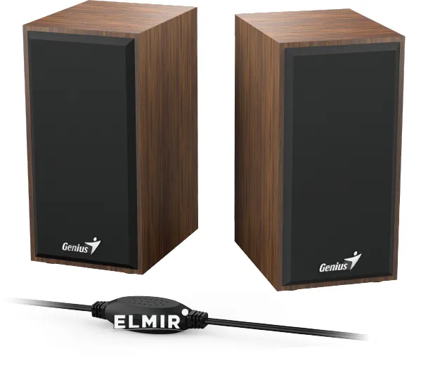Визначний елемент у будь-якому інтер'єрі. Дерев'яний корпус для досконалого звуку. Легкість у використанні USB пристрій підходить для будь-якого девайсу з роз'ємом 3.5 мм
Ціна: 400 грн
Edifier
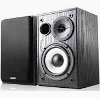Компактна активна акустична система R980T є ефективним рішенням для робочого місця і невеликих приміщень. Вона має вихідну потужність 24W RMS від 4 дюймових басових динаміків і 13 мм твітерів. До колонок можуть бути підключені аудіо пристрою на дві пари RCA входів. Регулятори гучності і рівня НЧ розташовані на задній панелі активної колонки, що дозволяє легко налаштувати параметри прослуховування.
Ціна: 2 900 грн
Sven
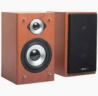Маленькі колонки, здатні "грати" на рівні з набагато більшими за розміром звуковими моніторами. Повноцінна двосмугова акустика може повноцінно озвучити простір навколо ПК, та водночас не займе багато місця на робочому столі. Доступні п'ять кольорів.
Ціна: 1 343 грн
Велосипеди
Azimut 26
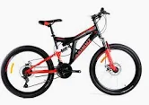Дорослий велосипед Azimut 26″ Power красивий, потужний та витривалий байк бюджетного рівня. Потужна залізна рама, яка відмінно витримує навантаження при активному катанні. У велосипеда хороші дискові механічні гальма, які швидко схоплюються з колесами і зупиняють їх. Система витримує значне навантаження і оптимальна при інтенсивному катанні. Оскільки модель оснащена міцними ободами, ви захищені від ризиків утворення «вісімок», а завдяки глибокому малюнку на покришках управління велосипедом подарує вам тільки легкість!
Ціна: 5 750 грн
Merida 28
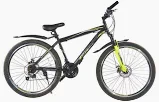Гібридний велосипед з надійними гальмами V-брейк та амортизаційною вилкою за привабливу ціну. Ваш надійний компаньйон для поїздок містом та лісових стежок.
Ціна: 20 000 грн
SPARK 27.5
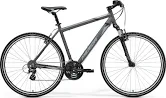Купити велосипед SPARK FIRE 27. 5-ST-17-AM-D (Чорний із жовтим) ви можете, оформивши замовлення у нас на сайті, а також по телефону гарячої лінії.
Ціна: 5 000 грн
Тренажери
Лава для жиму
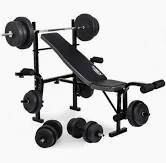Колір бокової частини обивки чорний + сірий або чорний + помаранчевий. Ви плануєте обладнати свій домашній спортзал? Необхідним обладнанням буде лава для силових занять, функції якої були передбачені та запроектовані з думкою про розвивальне тренування для всіх партій м'язів. Ось основні функції й можливості тренувань, які гарантує лава для вправ: Батерфляй (Поворотні важелі з обох боків від лавки) Важелі для тренування м'язів ніг
Ціна: 6 900 грн
Бігова доріжка
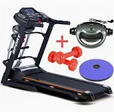Електрична бігова доріжка HRS T-280M з масажером + твістер + гантелі Швидкість до 19 км/год Нова зручна система змащення бігового полотна 3 зміни кута нахилу бігової доріжки Надійний мотор забезпечить тиху та стабільну роботу бігової доріжки. Бігова доріжка йде в комплекті з масажером, двома гантелями, пристосуванням для відпрацювання «хрустів» та твістером
Ціна: 20 000 грн
Орбітрек
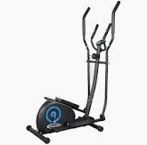Відзначимо, що всі перераховані корисні ефекти однаково актуальні і для жінок, і для чоловіків. Крім згаданих результатів занять на орбітреці – досить очевидних і легко спостережуваних – поліпшення фізичної форми супроводжується підвищенням стійкості до різноманітних недуг.
Ціна: 7 000 грн
Все для йоги
Дошка Сатху
Дошки Садху для стояння на цвяхах, з гравіюванням, для початківців з кроком 1 см подарунок йогу
Ціна: 2 000 грн
Набір для йоги
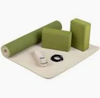Набір для йоги Flow від Bodhi — чудовий подарунок для йогов і всіх, хто хоче ним стати. Цей набір містить основні інструменти, необхідні для цілісної практики асан: килимок для йоги та два блоки, а також ремінь для йоги. Тепер ніщо не завадить вашому успішному старту. До комплекту входить легка та містка сумка-чохол.
Ціна: 2 450 грн
Колесо для йоги
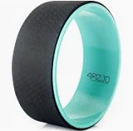Йога-колесо від польського бренду 4FIZJO - це простий, але необхідний інструмент, який допоможе урізноманітнити та поглибити вашу практику йоги. З допомогою колеса можна: покращити розтяжку, зняти біль у спині та плечах, безпечно навчатися і переходити до складніших асан, а також додати варіацій до стійок, які ви вже регулярно виконуєте.
Ціна: 1 170 грн
Гітари
Fender Stratocaster
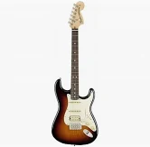Електрогітара, дека - вільха, гриф - клен / палісандр, звукознімачі - DoubleTap Humbucking / Yosemite Stratocaster Pickus, тремоло 6 сёдельное, колір - санбёрст, чохол
Ціна: 71 000 грн
Fender Telecaster
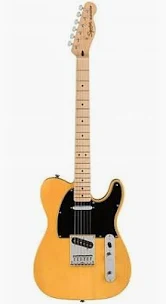Електрогітара Fender AFFINITY SERIES TELECASTER MN BUTTERSCOTCH BLONDE. Електрогітара, 6 струн, форма – Telecaster, дека – тополя, гриф – клен, звукознімач – Ceramic Single-Coil (S-S), колір – жовтий
Ціна: 15 100 грн
Gibson Les Paul Standart
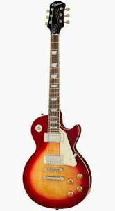Основні особливості електрогітари EPIPHONE LES PAUL STANDARD '50s HERITAGE CHERRY BURST: Відтворює зовнішній вигляд і звучання Les Paul 50-х; Дека з махагоні для теплого та резонуючого звучання з кленовим топом для чистих тонів; Гриф з махагоні 50s Rounded Medium C; 2 звукознімачі ProBucker; Бридж LockTone Tune-o-matic; Струнотримач Stopbar; Високоякісна електроніка CTS з проводкою в стилі 50-х; Кілки Epiphone Vintage Deluxe 18:1.
Ціна: 50 000 грн
Ударні
TAMA Superstar
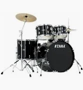Ударна установка TAMA SG52KH4 BK оснащена корпусами зі 100% тополі, яка дає теплий звук і середню атаку. Саме це і забезпечує їм популярність протягом уже понад 50 років. Подвійний том-холдер Omnisphere зручно налаштовується, що дозволяє вибрати будь-який кут нахилу томів. Зменшена, але надійна педаль, оснащена подвійним ланцюговим приводом і регулюванням кута нахилу колотушки. Таким чином, TAMA SG52KH4 BK — гарний початок для новачків, яким необхідно опанувати правильну техніку. Установка представлена в чорному кольорі.
Ціна: 19 000 грн
Mapex
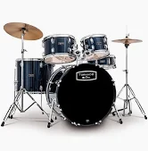Mapex TND5044TC, серії Торнадо – одна з найдоступніших барабанних установок в Україні. Комплект націлений на барабанних падаванів, які шукають барабанну установку за невеликі гроші, з повним оснащеним залізом і діжками. Mapex розвивалася дуже короткий час, тому ноу-хау тут у кожному лазі, болті та ключі, і ми хочемо дізнатися, чи це в нижньому ціновому сегменті.
Ціна: 23 900 грн
Maxtone
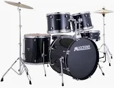Акустична Ударна установка MAXTONE MXC3005 (Black). Ця доступна ударна установка - відмінний варіант для початківця барабанщика.
Ціна: 24 000грн
Духові
Флейта
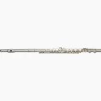Yamaha YFL272 Подібно флейтам 300 і 400 серій, інструменти 200 серії відрізняються таким же висококласним дизайном і якістю виготовлення, при цьому вони зроблені з довговічного сплаву - нейзильберу з срібним покриттям. Крім надійності інструменти цієї серії відрізняються прекрасним відгуком та точністю інтонування.
Ціна: 37 710 грн
Саксофон
Альт саксофон J.Michael AL500 - це преміальна якість за доступною ціною Найдоступніша модель в лінійці альт саксофонів J.Michael, AL500 відрізняється по-справжньому японським якістю виготовлення і стане чудовим вибором для музиканта.
Ціна: 17 500 грн
Труба
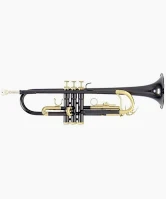Roy Benson TR-101K вже багато років є втіленням інноваційних ідей, при цьому залишаючись у привабливій ціновій категорії. Разом із професійними музикантами та видатними майстрами, команда творців інструментів Roy Benson розставляє нові акценти, дозволяючи виконавцям краще розкривати свої музичні уявлення.
Ціна: 10 300 грн